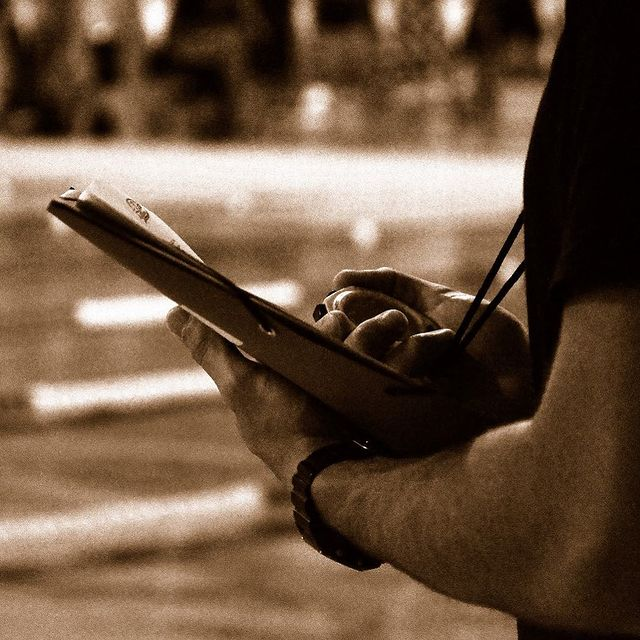
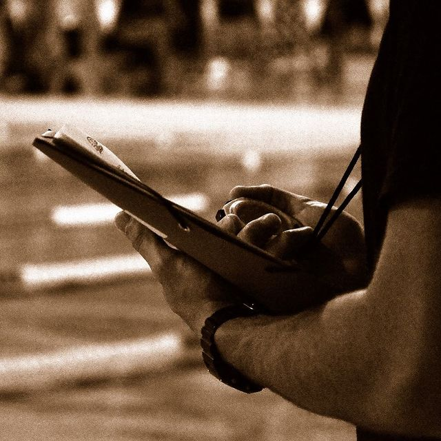

-
Groupe ENF
Validation du Sauv’Nage pour 6 enfants
Validation du Pass’Sport de l’Eau pour 4 enfants
-
Groupe Avenirs
1 seul nageur dans ce groupe, participation à 2 compétitions
du circuit Avenirs
-
Groupe Jeunes
6 nageurs qualifiés pour les Régionaux d’hiver (mars 2020,
annulés du fait de la crise sanitaire Covid-19)
Départementaux à Lons : 10 nageurs engagés, 15 podiums
Participation à la journée départementale demi-fond à
Bayonne (Jeunes 2)
Participation des Jeunes 3 aux régionaux 2 kms à Bayonne : 1
podium
Meeting Roger Noblet : 10 nageurs engagés, 5 podiums
Meeting national Agen : 1 nageur Jeune 3 participant
-
Groupe Juniors-Seniors
8 nageurs qualifiés pour les régionaux d’hiver (mars 2020)
Engagement d’une équipe mixte aux interclubs toute
catégorie
Participation à 2 journées qualificatives
Départementaux : 10 nageurs engagés, 2 podiums
Journée départementale demi-fond : 10 nageurs, 3
podiums
Meeting national d’Agen : 5 nageurs engagés, 4 finales, 2
podiums
Régionaux de Saint Yrieix (mars 2020) : 6 nageurs, 8
finales, 2 podiums

 
